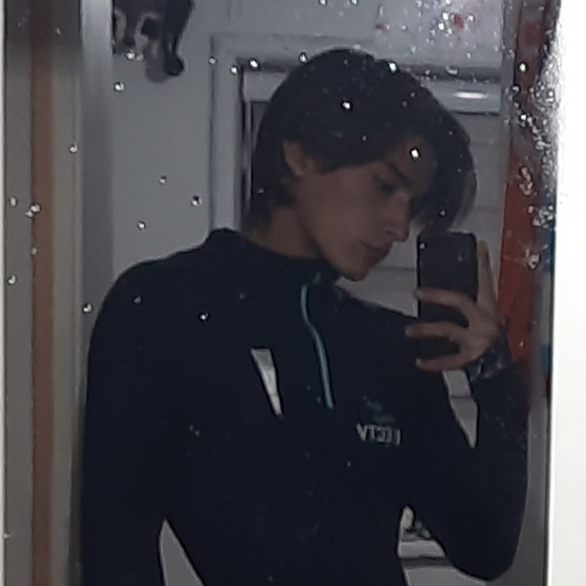

About me
Mi nombre es Vicente Arce, actualmente vivo en la comuna de peñaflor, Chile. Naci el 30 de marzo del 2004, por ende, a la fecha en la cual estoy escribiendo este texto, tengo 19 años. Estudio Ingenieria civil en Informatica en la Universidad de Santiago de Chile, o más conocida como la "Usach". Actualmente no me encuentro trabajando, es por eso que mi meta para el año 2024 es encontrar un trabajo en relación a lo que estoy estudiando. En la actualidad me manejo en lo basico con lenguajes como C y Python, tambien me manejo un poco con HTML y CSS, aunque estos ultimos no se consideren lenguajes de programación. Mis Hobbies son jugar a la fútbol y otros deportes, muchas veces las personas me dicen que escapo por completo del estereotipo que se tiene de los informaticos. Mi objetivo a mediano plazo es terminar mi carrera y poder comprar una vivienda, mientras que mi objetivo a largo plazo es empezar a estudiar fisica y humanidades en la Universidad de Chile (UCH).
